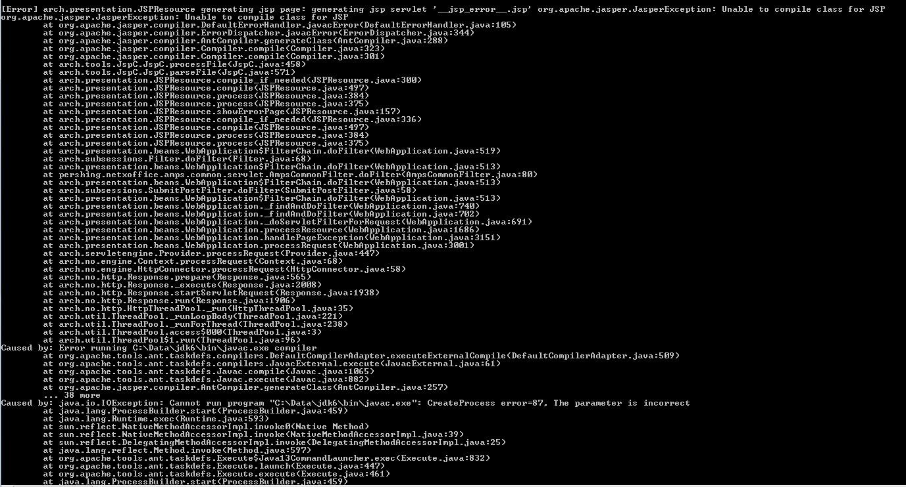

My life these days looks a lot like this:
But hey, Pittsburgh's pretty cool. They say it takes 3 years for this place to grow on you, so if you haven't gotten to that point yet, don't fret! Sometimes it just takes finding the great places in the city to love the place.
Sometimes you don't find those great places until you start playing Pokemon Go and the pokestops lead you to them. Sometimes you've just got to find that park with the view (Schenley in case you were wondering), eat a crêpe (they are literally everywhere here), or join the right club. In case you didn't already know, there are tons and tons of museums around the place. Haven't gone to the mattress factory? GO! NOW! What about the Phipps Conservatory? You do realize you get in free as a student, right? So, if you hate Pittsburgh, walk outside right now before it starts raining and stop hating it.
This blog shares some of my views on the city and queries some things to do in this place.